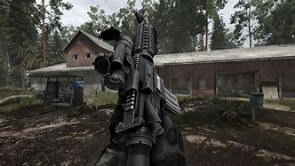
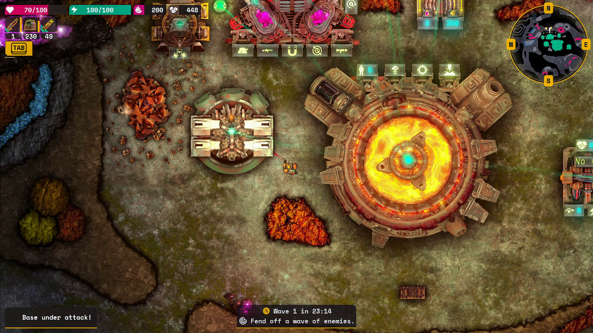

O Godot Engine
Godot Engine je plně vybavený, multiplatformní herní engine pro tvorbu 2D a 3D her z jednotného rozhraní.
Hry vytvořené v Godotu
Lumencraft (2D hra)
Lumencraft je akční hra s prvky přežití, kde hráči prozkoumávají podzemní svět plný nebezpečí a tajemství.
Road to Vostok (3D hra)
Road to Vostok je realistická survival hra zasazená do post-apokalyptického světa, kde hráči musí přežít v drsných podmínkách.
